Панель Редактор Технологического Процесса позволяет добавлять и редактировать последовательности процессов, связанные с группами процессов. Группа процессов имеет транспортный маршрут между шагами процесса, который визуализируется и определяется на 3D-видовом экране.
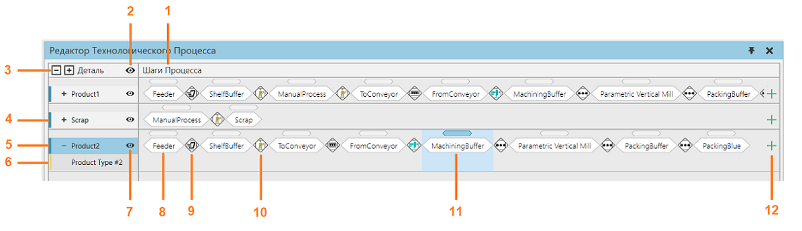
1. |
Шаги процесса групп процесса |
2. |
Показать скрытые группы процессов |
3. |
Развернуть/свернуть группы потоков и типы деталей |
4. |
Свернутая группа процессов |
5. |
Группа процессов |
6. |
Тип продукта |
7. |
Скрыть/показать группу процесса |
8. |
Шаг процесса |
9. |
Переход, осуществляемый интерполяционным транспортом |
10. |
Переход, выполняемый транспортным контроллером |
11. |
Выбранный шаг процесса |
12. |
Добавить шаг процесса |

Доступ
Чтобы получить доступ к Редактору технологического процесса:
·Перейдите на вкладку Процесс.
·В группе Редактор щелкните команду Процесс.
·Панель Редактора Технологического Процесса видна внизу, а Оверлей Редактора Технологического Процесса активирован в 3D-окне просмотра.
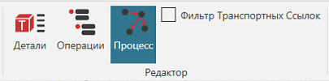
Добавление и редактирование шагов процесса
Чтобы добавить новый шаг процесса для группы процессов, щелкните значок плюса в конце строки. Вы можете выбрать шаг процесса из списка, содержащего все доступные в настоящее время процессы в макете. Шаг процесса можно отфильтровать из списка с помощью поля поиска. Местоположение добавляемого шага процесса указано линией. Расположение по умолчанию — после выбранного шага процесса.
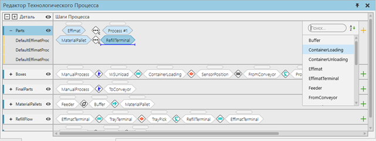
Вы также можете добавить шаги до и после существующего шага процесса в контекстном меню. Выберите шаг процесса или транспортный контроллер, откройте контекстное меню, щелкнув правой кнопкой мыши, а затем добавьте шаги в нужное место.
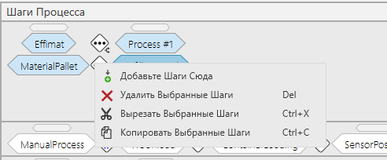
Если вам нужно изменить порядок шагов процесса, перетащите шаг до или после другого шага. Место, где вы вставляете оператор, показано линией.
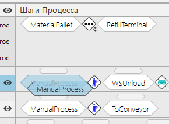
Значок между этапами процесса указывает, какой транспортный контроллер используется для транспортировки деталей из одного процесса в другой. Если переход любого из всех возможных маршрутов между этапами процесса требует использования нескольких транспортных контроллеров, значок показывает три точки. Если на значке отображается красный крестик, маршрут между этапами процесса отсутствует. Это происходит, когда производственный процесс еще не определен. Тем не менее, это также может быть преднамеренно.
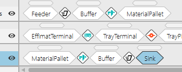
Определение Потока Продукции
Вы можете определить поток продукции двумя способами.
·использование ярлыков процесса в окне 3D-просмотра для одновременного определения транспортных связей и шагов процесса
·отдельное определение транспортных связей в 3D-окне и шагов процесса
Использование имен процессов для определения потока и шагов процесса
Наведите указатель мыши на транспортный узел. Будут отображены все процедуры, связанные с узлом. Цвет узла сменится с синего на желтый (пока наведен курсор).
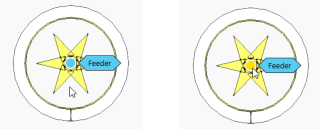
Нажмите левой кнопкой мыши на метке процесса и переместите указатель мыши к следующему узлу процесса, который вы хотите подключить.

Будут показаны пунктирные линии, означающие, что вы можете подключиться к этому процессу.
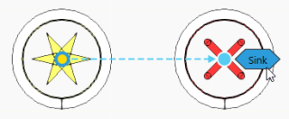
Нажмите на метку процесса, который вы хотите подключить. Пунктирная линия превратиться в сплошную линию, и определится поток от одного процесса к другому.

После этого процесс автоматически добавится в Шаги процесса в Редакторе потока процесса.
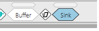
Создайте транспортную ссылку в 3D-мире и добавьте шаги процесса в редакторе потока процесса
Вместо того, чтобы щелкать ярлык процесса, щелкните сам транспортный узел. Затем наведите указатель мыши на другой узел.
Будут показаны пунктирные линии, означающие, что вы можете подключиться к этому узлу.

Нажмите на узел, который вы хотите подключить. Транспортная ссылка теперь создается в 3D-мире.
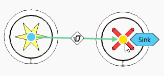
В шагах процесса найдите процесс и добавьте его в последовательность.
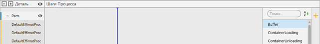
Найдите процесс и добавьте его вручную.
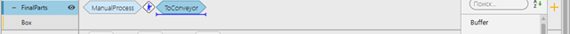
Фильтрация транспортных ссылок
Если в окне 3D-просмотра отображается много транспортных ссылок, вы можете уточнить вид, отфильтровав транспортные ссылки, чтобы показать только маршруты между определенными этапами процесса.
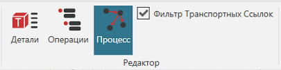
Для фильтрации транспортных ссылок:
·В группе Редактор включите Фильтр Транспортных Ссылок.
·Выберите один или несколько шагов процесса, какие транспортные ссылки вы хотите видеть.
·Когда выбран один шаг процесса, в трехмерном мире отображаются только допустимые маршруты от предыдущей реализации процесса к следующей реализации процесса.
·Когда выбрано несколько шагов процесса, в трехмерном мире отображаются только допустимые маршруты между реализациями процесса.
Перед фильтрацией
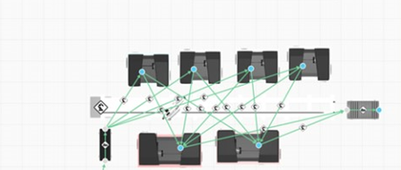
После фильтрации
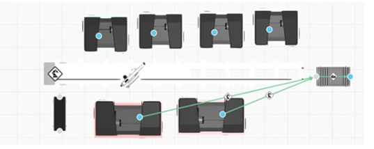